Serial Communication
How chips talk to each other one bit at a time: asynchronous serial (UART) with its start bits and baud rates, and the synchronous buses SPI and I2C, where a shared clock keeps everyone in step.
Asynchronous serial: UART
Serial communication
One wire, one bit after another
Imagine passing a message to a friend across the room using a single torch: on means 1, off means 0. You can only show one bit at a time, so the message goes out in sequence, bit after bit.
That is serial communication. It needs very few wires, which is exactly what small chips with few pins want.
- Bits are transmitted over a wire in sequence, one after the other (as opposed to parallel, where each bit has its own wire).
- Bits are encoded in the voltage level of the wire, e.g. high voltage is '1' and low voltage is '0'. The transmitter's TX pin is just a push-pull output and the receiver's RX pin a digital input.
- The two devices must share a ground (GND) so that "high" and "low" mean the same thing at both ends.
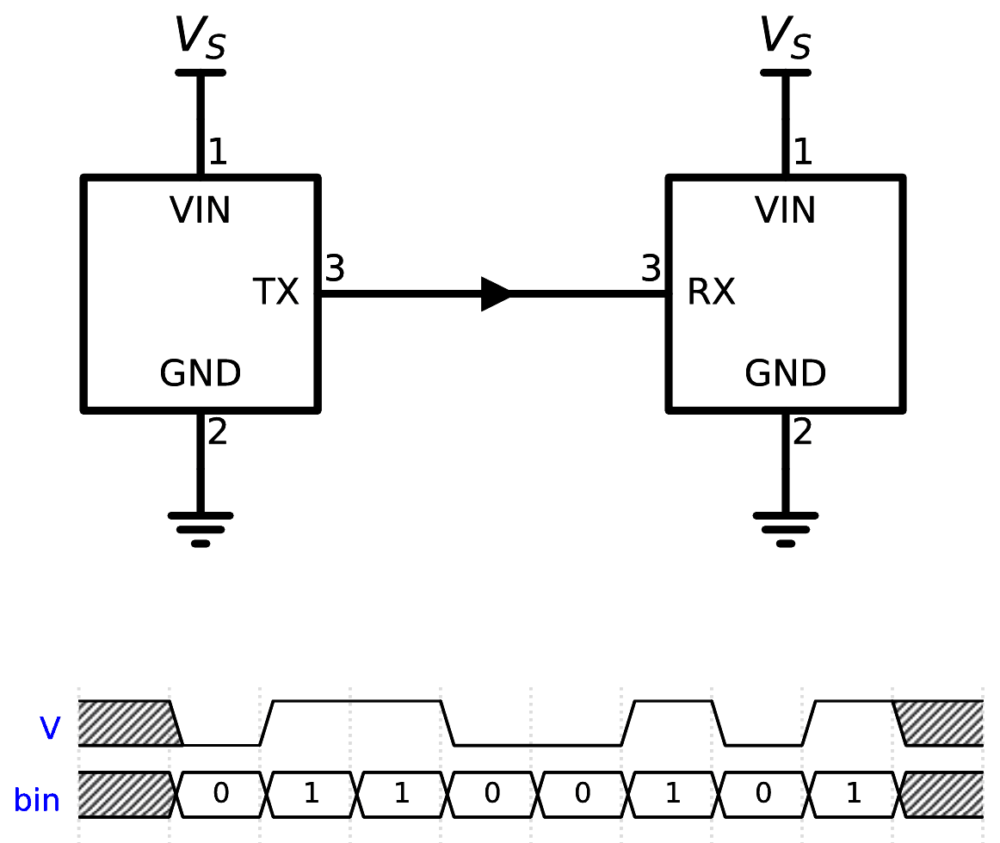
Timing the receiver
When should the receiver look at the wire?
Someone holds the torch on for a while, then off, then on again. Was that "1 0 1", or "11 00 11", or "111 000 111"? You can't tell unless you know how long one bit lasts.
The receiver sees changes, but a run of identical bits has no changes in it. Without a shared sense of timing, the same signal has many readings.
- The receiver can detect changes in its input, but that alone does not say how often it should read the input.
- In the slide, the voltage V can be read as bin1 = 110011 or as bin2 = 101: both are consistent with the same waveform.
- We can't know for sure. Transmitter and receiver need a way to synchronise. Two families of solutions follow:
- Asynchronous: agree on the bit rate in advance and mark the start of each byte (UART).
- Synchronous: send a clock signal on an extra wire (SPI, I2C).
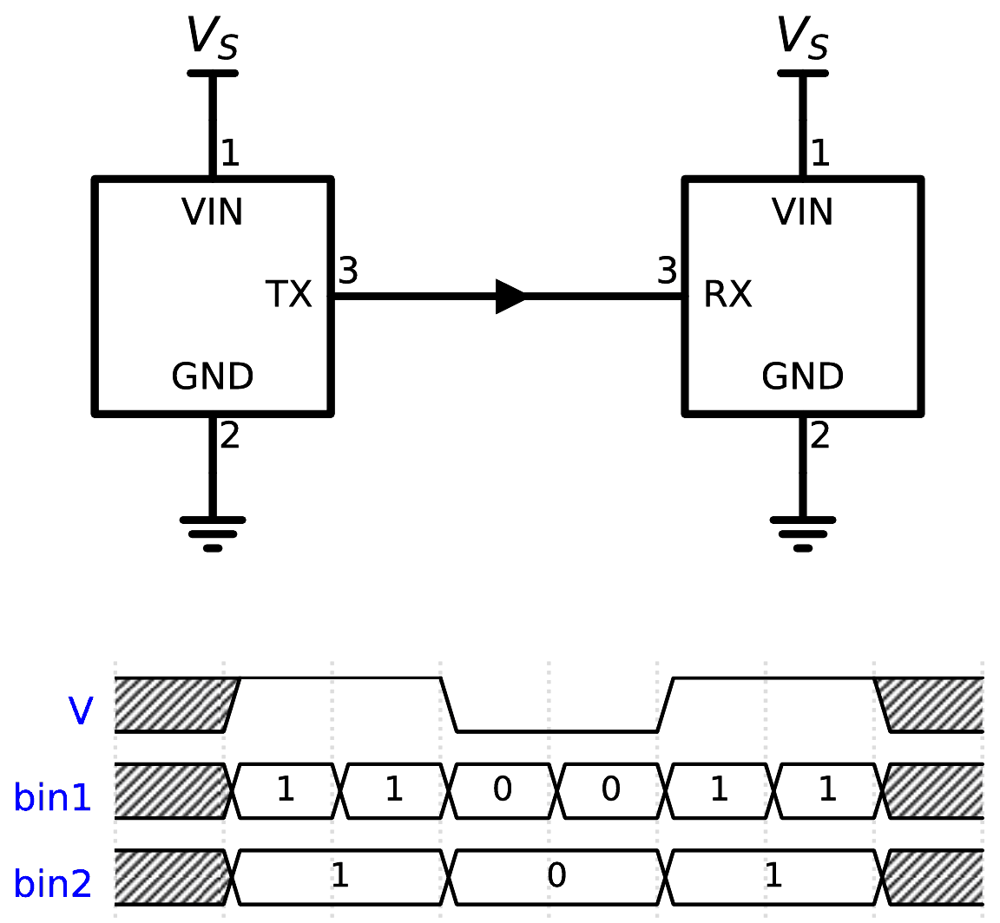
Asynchronous serial: start bit, stop bit, format
No shared clock, just an agreement
Two people agree beforehand: "I'll flash at one bit per second. When the torch has been on for a while and suddenly goes off, start your stopwatch: that's the start." From then on the listener just counts seconds.
Each byte gets its own little envelope: a start bit to say "here it comes" and a stop bit to say "done, back to resting".
- Transmitter and receiver do not share the same clock.
- Synchronisation:
- When idle, the line is at a high state, '1'.
- The beginning of each transmission is signalled by setting the line to '0' (start bit).
- Bits are transferred at a pre-agreed baud rate (typically kHz).
- The end is signalled by setting the line to '1' and holding it (end bit or stop bit). There are one or two stop bits.
- Data are transmitted in a pre-agreed format: data size (5 to 9 bits, typically 8), bit order (typically least significant bit first) and an optional parity bit.
- The common shorthand 8N1 means 8 data bits, No parity, 1 stop bit: a 10-bit frame per byte.
ASCII 'a' = 0x61 = 0b01100001 ⇒ on the wire: 0 1 0 0 0 0 1 1 0 1
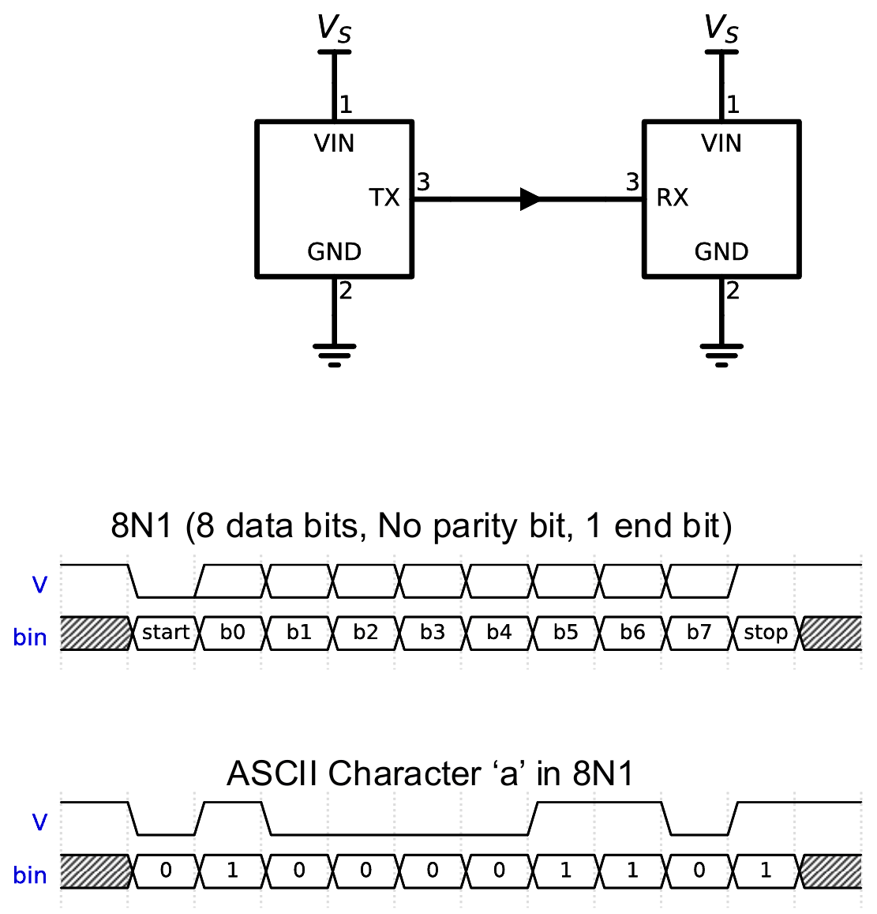
Baud rate and clock tolerance
How fast, and how precisely
The baud rate is the agreed tempo, like a metronome both musicians set before playing. The receiver re-starts its stopwatch on every start bit, so the two clocks only need to agree for the length of one byte. A small difference is fine; a few percent off and the last bits are read at the wrong moment.
- The baud rate is the number of bit periods (symbols) per second; for UART each symbol is one bit. The bit time is its inverse:
Tbit = 1 / baud 9600 baud ⇒ 104.2 µs per bit
- Every byte costs a whole frame, so the useful throughput is
bytes/s = baud / bits per frame 9600 / 10 = 960 B/s for 8N1
- The receiver times every bit from the falling edge of the start bit and reads each bit in its middle. If its bit time is off by a fraction e, the sample for bit k drifts by (k + 0.5)·e bit times. The last sample (the stop bit, k = 9 in a 10-bit frame) must stay within half a bit:
9.5 · |e| < 0.5 ⇒ |e| < 5.3%Real UARTs detect the start edge by oversampling, which eats some of that margin, so in practice both clocks should be within a couple of percent.
- Because the receiver re-synchronises on each start bit, errors never build up across bytes, only within one frame.
Error detection: parity check
One extra bit that counts the 1s
Before sending, you agree that every message will contain an even number of 1s, adding one extra 1 at the end if needed. If the listener counts an odd number, something got garbled on the way.
It is a cheap smoke alarm: it tells you that something went wrong, not what, and two mistakes can cancel each other out.
- Even parity: the parity bit is set so that the total number of '1's transmitted (data + parity) is even.
- Odd parity: the parity bit is set so that the total is odd.
- If the received number of '1's is not as expected, an error occurred. One error (bit flip) can be detected; in general any odd number of flips is caught and any even number is missed.
- Parity cannot correct the error; the frame is simply flagged as bad.
- Parity is optional: it helps in noisy media but slows down transfers (an 8E1 frame is 11 bits instead of 10).
- Slide example: 'a' (three 1s) with even parity gets p = 1. At the receiver, b3 flipped to 1, so five 1s are counted: error detected.
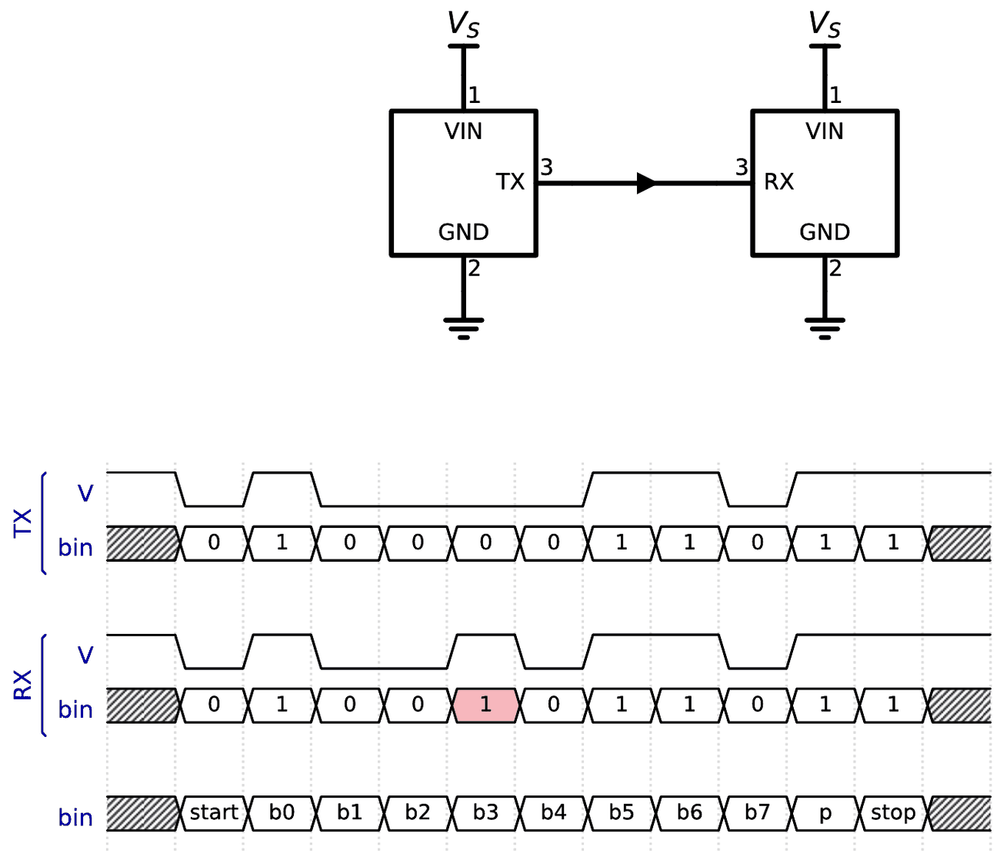
Bidirectional asynchronous serial
Two wires, crossed over
A phone call: each person has a mouth (TX) and an ear (RX), and the mouth of one goes to the ear of the other. Both can talk at once (full-duplex). A walkie-talkie only lets one speak at a time (half-duplex). A radio broadcast goes one way only (simplex).
- For bidirectional communication we need 2 lines (plus the shared ground): TX of A to RX of B, and RX of A to TX of B.
- Full-duplex: both can transmit and receive simultaneously.
- Half-duplex: devices take turns transmitting and receiving.
- Simplex: unidirectional only.
- The crossover matters: wiring TX to TX connects two push-pull outputs together, and RX to RX leaves both inputs listening to nobody.
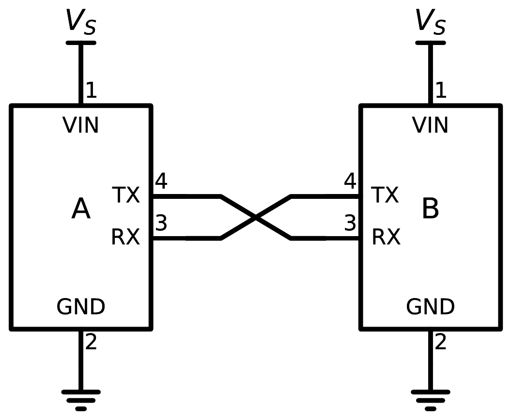
Implementing asynchronous serial
TTL vs RS-232 levels, UART vs bit-banging
The frame format says what to send; the electrical convention says which voltages mean 1 and 0. Microcontrollers speak quietly (0 V and 3.3 V); the old RS-232 standard shouts with ±12 V, and upside down. And the work of building frames can be done by a dedicated hardware helper (a UART) or, laboriously, by the CPU itself.
| Convention | '1' | '0' |
|---|---|---|
| TTL serial (Transistor-Transistor Logic) | positive, typically 5 V or 3.3 V | 0 V (ground) |
| RS-232 serial | negative, typically -12 V | positive, typically +12 V |
- RS-232 levels would damage an MCU pin; a level-converter chip translates between RS-232 and TTL levels.
- UART (Universal Asynchronous Receiver-Transmitter): a hardware implementation of asynchronous serial. It creates the frames (start, data, parity, stop) and controls the physical lines, so the CPU just reads and writes bytes.
- Software UART (bit-banging): a software implementation directly controlled by the processor, toggling and sampling a GPIO with precise timing. Inefficient, but an option if no UART is available in the MCU.
Example of a UART peripheral: the CozIR-A CO2 sensor
Text commands over 9600 baud 8N1
Talking to this sensor is like texting it: you send the letter "Z", it texts back "Z 01521", meaning 1521 ppm of CO2. Both sides just need to agree on the speed and format before the chat begins.
- CozIR-A: a CO2 sensor with a UART interface: 9600 baud, 8 data bits, no parity, 1 stop bit, no hardware flow control (from its datasheet table).
- Pins Rx_In (UART receive input) and Tx_Out (UART transmit output) cross over to the MCU's TX and RX.
- It provides an ASCII-based command/control interface: commands and replies are text characters, each sent as one UART frame, ending with
\r\n. Z\r\nreturns the most recent filtered CO2 measurement in ppm;z\r\nreturns the unfiltered one. Example response:Z 01521\r\n.
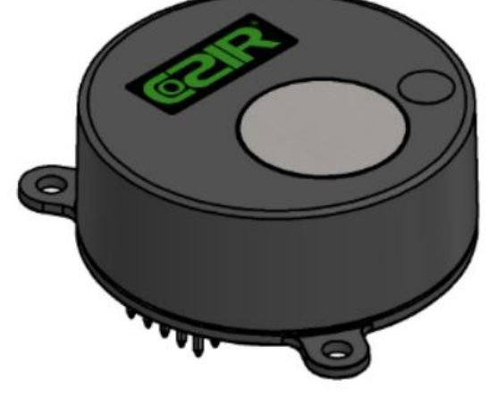
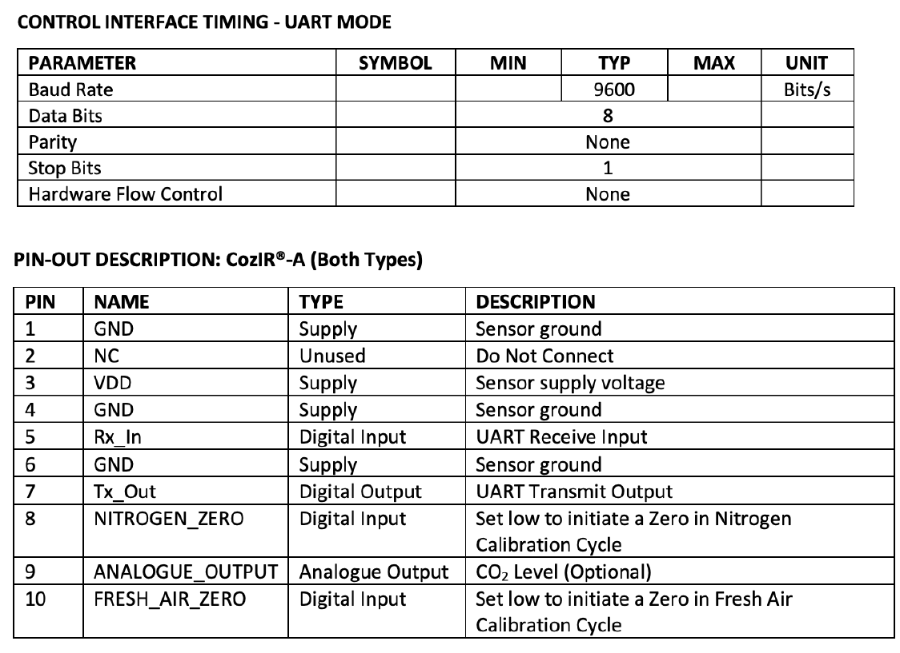
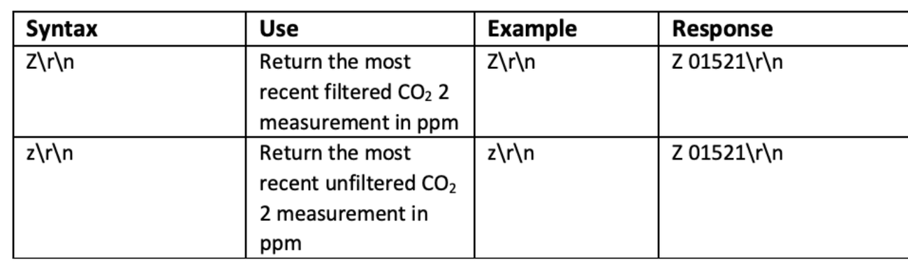
Synchronous serial: SPI
Synchronous serial communication
Send the clock along with the data
Instead of agreeing on a tempo, one person claps for every bit: "data ready... clap, read it!" The listener doesn't need a stopwatch at all, it just reads on every clap. The clapper can even speed up or pause, and nothing breaks.
- One device, the controller, generates a clock signal.
- All devices use this clock to synchronise their transmitters and receivers with the controller:
- transmissions (driving the line) occur on the falling edge of the clock (high to low),
- receptions (reading the line) occur on the rising edge (low to high),
- or vice versa.
- Changing the data half a clock period before it is read guarantees it is stable when sampled.
- Advantages over asynchronous serial: no need to pre-agree the baud rate, no overhead of synchronisation bits, and cheaper hardware than a UART (essentially a clocked shift register).
- The cost: an extra wire for the clock.
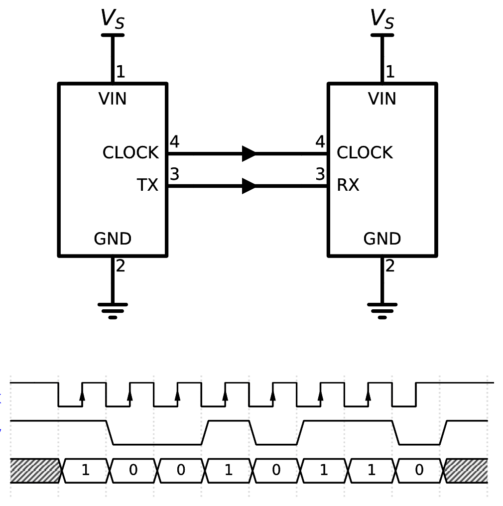
SPI (Serial Peripheral Interface)
Clock, data out, data in
SPI is a conveyor belt loop between two people: with each tick of the belt, one item moves from you to them and one moves from them to you. After eight ticks you have swapped a whole byte. Even if you only wanted to give something, you always get something back.
- SCLK (Serial Clock): driven by the SPI controller (or master). The controller selects the clock frequency, which dictates the rate of communication (around MHz). It must be supported by the peripheral(s).
- MOSI (Master Out, Slave In): data from the controller to the peripheral(s).
- MISO (Master In, Slave Out): data from the peripheral(s) to the controller.
- Full-duplex: on each clock cycle a bit is written/read on MOSI and a bit is written/read on MISO. This is maintained even when only one-directional transfer is intended; the unwanted direction just carries don't-care bits.
- Internally each side is a shift register; MOSI and MISO join the two registers into a ring. Bit order is configurable; most devices (including the ADXL362 later) send the most significant bit first.
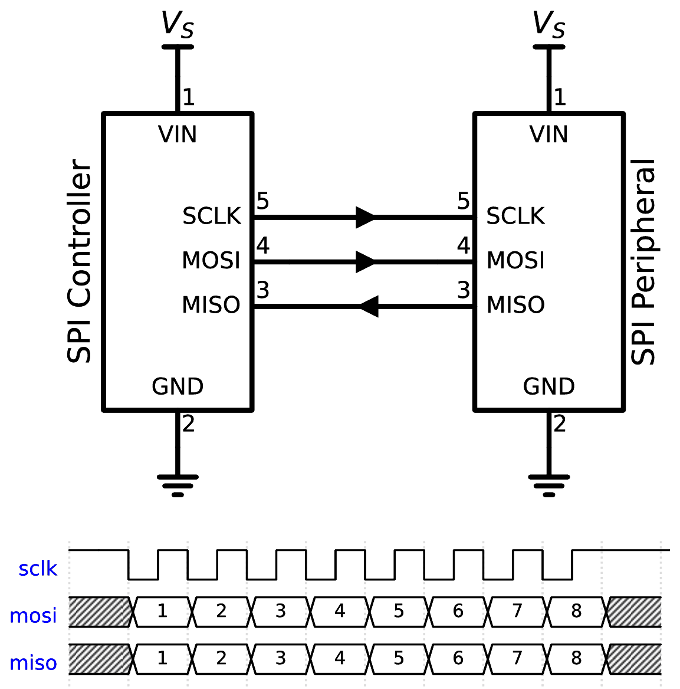
SPI modes: CPOL and CPHA
Which edge reads, which edge changes
Clapping comes in four styles: hands resting apart or together (clock idles low or high), and reading on the first or the second half of each clap. All four work, but both sides must use the same style, and the peripheral's datasheet tells you which one.
- CPOL = 0: clock idles at 0; the leading edge is rising and the trailing edge is falling.
- CPOL = 1: clock idles at 1; the leading edge is falling and the trailing edge is rising.
- CPHA = 0: data changes on the trailing edge and is read on the leading edge (so the first bit must already be on the line when CS goes low).
- CPHA = 1: data changes on the leading edge and is read on the trailing edge.
| SPI mode | CPOL | CPHA |
|---|---|---|
| 0 | 0 | 0 |
| 1 | 0 | 1 |
| 2 | 1 | 0 |
| 3 | 1 | 1 |
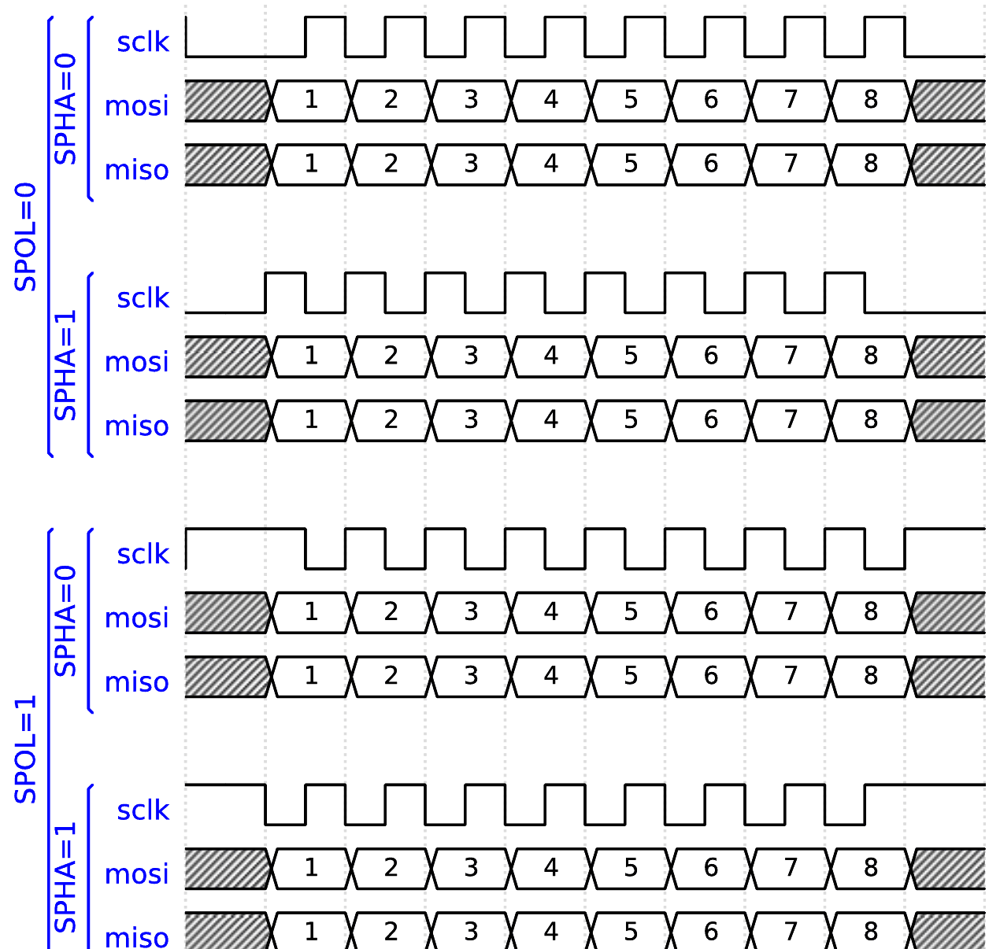
SPI: chip select
"You, listen now"
Chip select is tapping someone on the shoulder. While tapped (CS low), they listen to the clapping and answer. When you let go, they stop listening and go quiet, freeing the shared answer line for someone else.
- Chip Select (CS), active low: the controller uses it to select the peripheral to communicate with.
- CS high → low: the peripheral activates itself and gets ready to transmit/receive.
- CS low → high: the peripheral puts MISO in Hi-Z (deactivates its output).
- When deactivated, the peripheral ignores SCLK and MOSI.
- A pull-up resistor on CS is recommended for MCUs that boot with their GPIOs in Hi-Z, so the peripheral stays deselected until the firmware takes control of the pin.
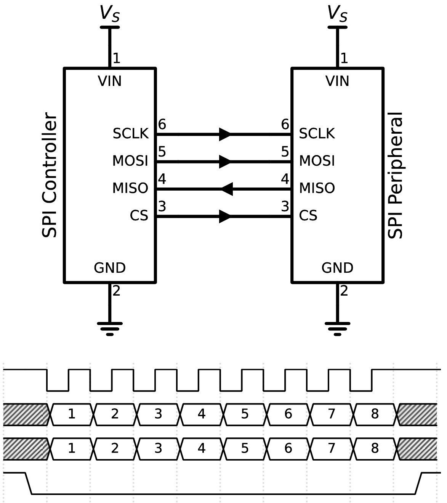
SPI: multiple peripherals
Shared lines, one CS each
Several people sit around the conveyor belt. Everyone sees the clapping, but only the one being tapped on the shoulder joins in. More people means more shoulders to tap: one extra wire per peripheral.
- Multiple SPI peripherals are supported. SCLK, MOSI and MISO are shared; each peripheral has its own CS output from the controller.
- The controller must make sure to have only one peripheral enabled at a time, otherwise two outputs would drive the shared MISO.
- Data transfers are only possible between the controller and a peripheral (not peripheral to peripheral).
- Requires 3 GPIOs + 1 GPIO per peripheral.
pins = 3 + n 4 peripherals ⇒ 7 pins
- Only one device can be the SPI controller.
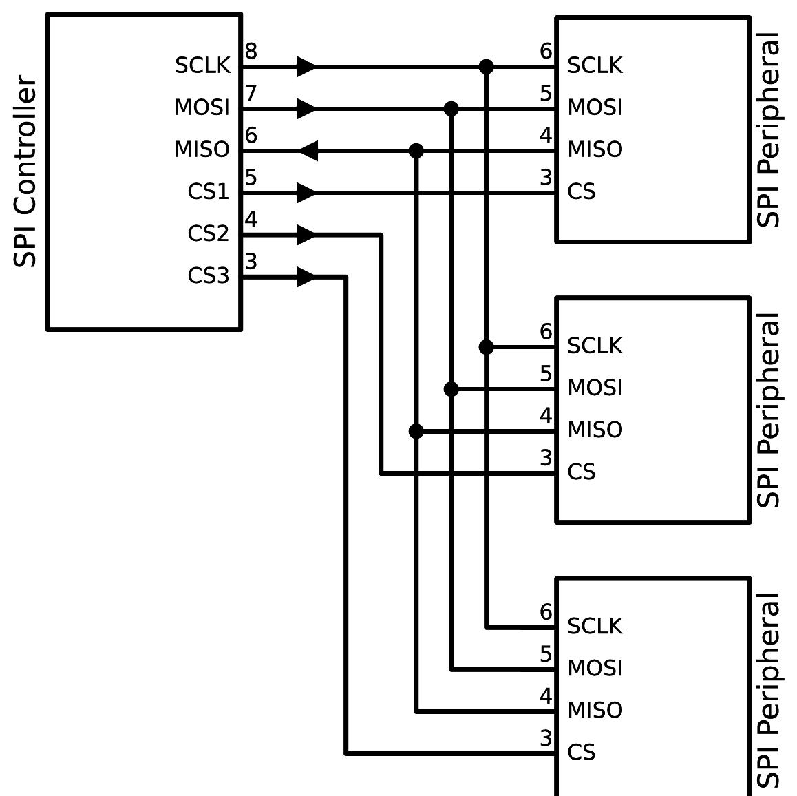
SPI: daisy chain
All in a ring, all at once
Instead of tapping individual shoulders, everyone holds hands in a circle and passes items along: you hand one to your neighbour, who hands theirs on, and the last one hands theirs back to you. Fewer wires, but everyone has to take part, even if you only wanted to reach one person.
- The SPI controller and the peripherals form a circle: the output of the first peripheral goes to the input of the second, and so on; the output of the last peripheral goes to the controller's input.
- Peripherals forward data to the next one: each acts as one stage of a long shift register.
- All peripherals are enabled together for a data transfer (one shared CS).
- Fewer pins are required, but all peripherals must be active even if the controller needs to talk to only one. To reach the k-th peripheral, its data must pass through the k - 1 before it.
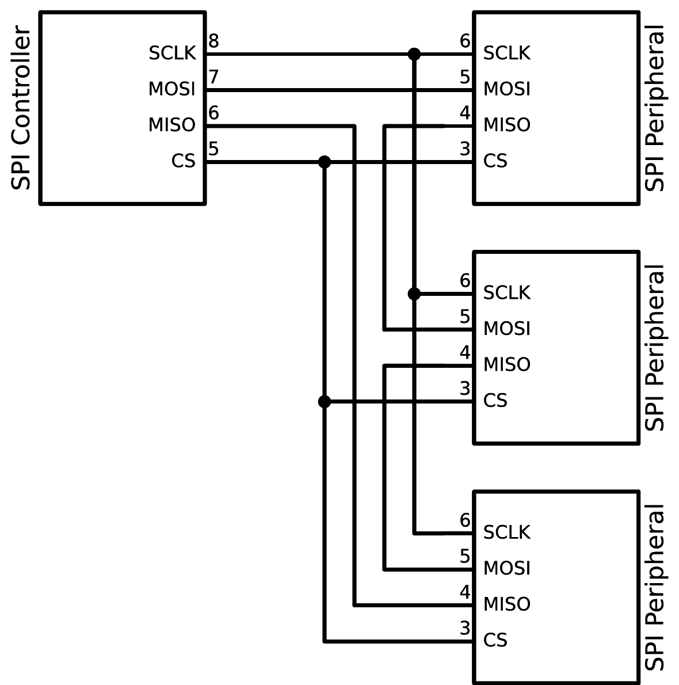
Example of an SPI peripheral: the ADXL362 accelerometer
Instruction, address, data
The accelerometer is a filing cabinet of numbered drawers (registers). To read a drawer you say "read", then the drawer number, then hold out your hand for one more byte while it passes you the contents.
- ADXL362: a 3-axis accelerometer with an SPI interface and a command/control interface over SPI.
- 4-wire connection: CS, MOSI, MISO, SCLK. The timing follows CPHA = CPOL = 0 (mode 0).
- The SPI port uses a multibyte structure in which the first byte is a command:
0x0Awrite register,0x0Bread register,0x0Dread FIFO. - Register read: instruction (0x0B), 8-bit address, then the sensor returns the data byte on MISO: 24 clocks with CS held low.
- Register write: instruction (0x0A), address, data byte, all on MOSI; MISO stays high impedance.
- The register summary lists each register's address, name, reset value and access, e.g. 0x00 DEVID_AD = 0xAD, 0x02 PARTID = 0xF2, and the XDATA/YDATA/ZDATA acceleration registers.
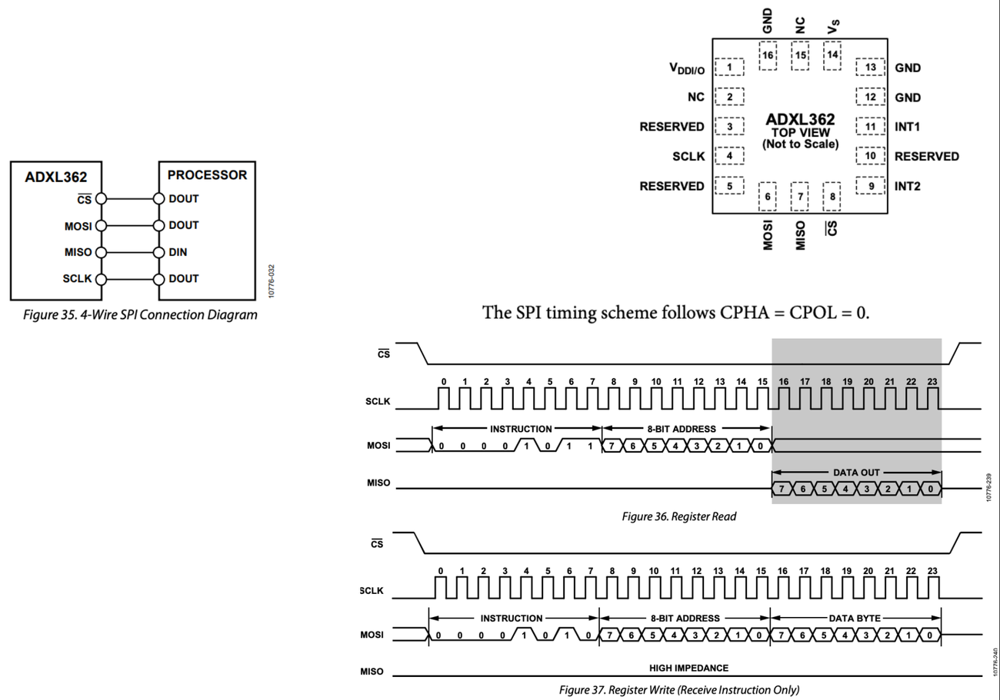
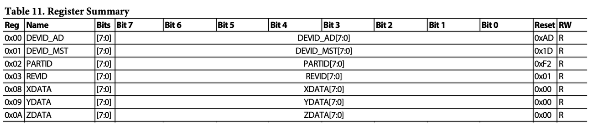
Synchronous serial: I2C
I2C (Inter-Integrated Circuit)
Two wires, open-drain, shared by many
SPI is fast but hungry for pins. I2C asks: can we drop the chip selects and use one shared data wire in both directions? Then everyone needs a way to talk on the same wire without fighting.
The trick is the bus stop cord: anyone may pull it down, nobody pushes it up. A spring (the pull-up resistor) lifts it when everyone lets go.
- SPI is faster and cheaper than UART and supports multiple peripherals, but requires many more GPIO pins, which puts a practical limit on the number of peripherals. I2C reduces the pin count by eliminating chip select and using a bidirectional data bus.
- Only 2 wires: a clock (SCL) and a data bus (SDA), each with a pull-up resistor.
- Outputs are open-drain: actively transmit '0' by pulling the line to GND, transmit '1' by disabling the output (the pull-up raises the line). This is different to SPI and UART, which are push-pull.
- Multiple transmitters can therefore safely share the same bus.
- The clock is generated by the controller, typically 100 to 400 kHz: faster than UART, slower than SPI, because open-drain rising edges are slower than push-pull ones.
- It consumes energy when transmitting '0': the pull-up has the full supply across it.
P = VS² / R (5 V)² / 5 kΩ = 5 mW per line held low
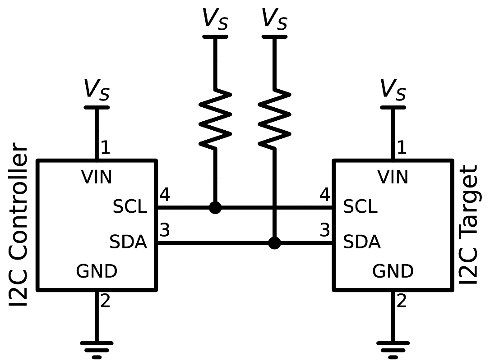
I2C: multiple peripherals and addresses
Addresses replace chip select
Instead of tapping shoulders, you call people by name. Everyone hears the call, only the named one answers. Two people with the same name in one room would be chaos, so identical chips get a pin that changes the last letter of their name.
- Peripherals, known as I2C targets, simply connect to the SCL and SDA buses.
- The CS functionality is replaced by addresses. Each target has a 7-bit address: 27 = 128 values, theoretically supporting up to 112 peripherals because some addresses are reserved.
- Addresses are often fixed, sometimes configurable. It is vital not to have two peripherals with the same address on the same bus.
- A variant of I2C with 10-bit addresses also exists.
- Configurable addresses: a sensor with address
0b011010xreads bit x from its ADR pin. With ADR tied to VS it answers to 0b0110101; with ADR to GND, 0b0110100. A target may have zero, one or more configurable bits.
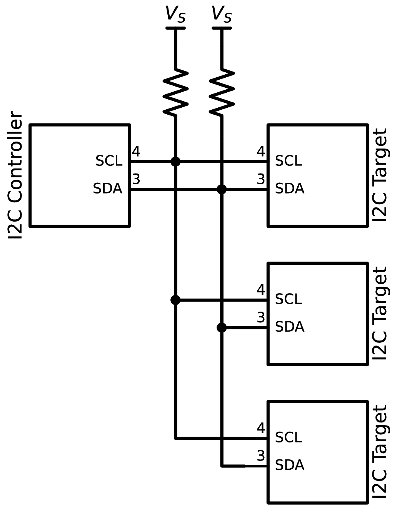
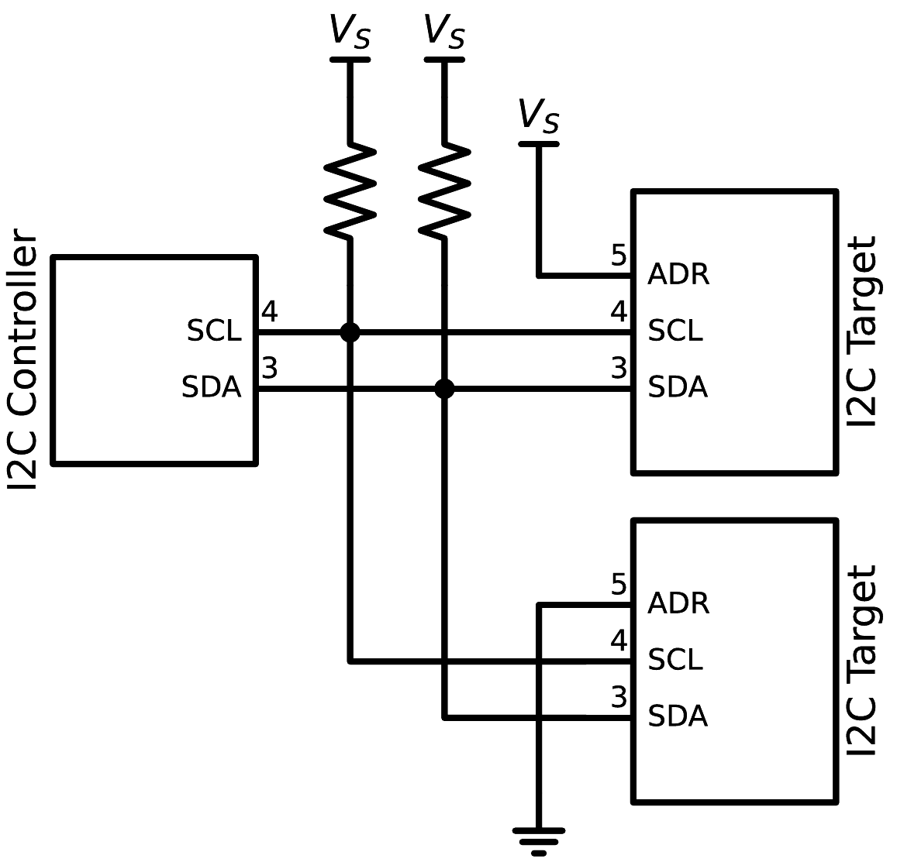
I2C: the address frame
7 address bits plus read/write
Every conversation starts with the controller calling a name and saying whether it wants to talk or listen, all packed into a single byte.
- All I2C data transfers are initiated by the controller.
- The first byte the controller puts on the line is the 7-bit address (most significant bit first, a6 to a0) followed by a bit that says whether the controller wants to read (1) from or write (0) to the peripheral.
address byte = (address << 1) | R/W
- Peripherals whose address does not match ignore it.
- Example: peripheral address 0b0110101 (0x35). To write:
0b01101010(0x6A). To read:0b01101011(0x6B).
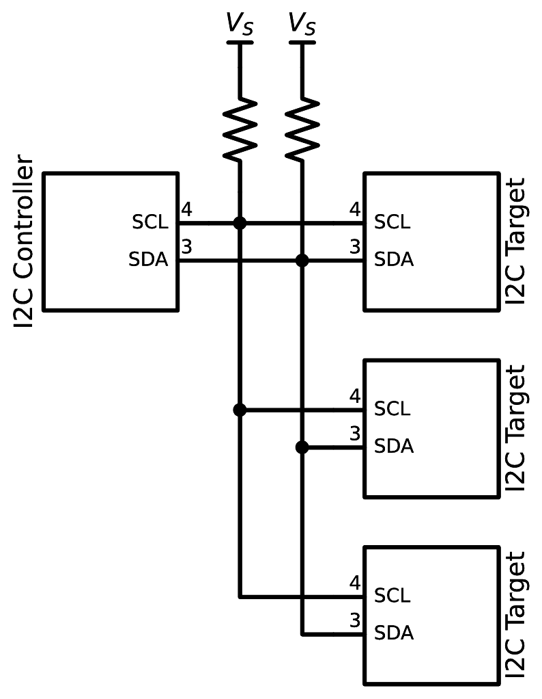
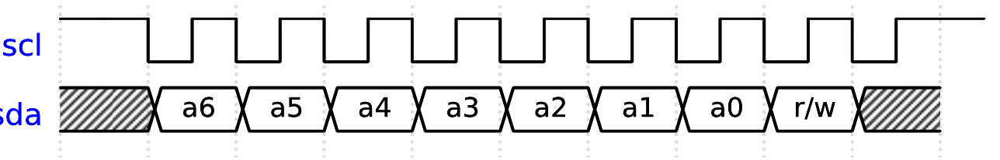
I2C protocol: start condition and acknowledgement
Getting attention, and confirming receipt
The controller clears its throat in a special way nobody uses during normal talk (the start condition), then calls the name. The named target answers with a quick "yes" by pulling the data line low (ACK). Silence means nobody by that name is there.
- During data bits, SDA only changes while SCL is low. A change of SDA while SCL is high is therefore reserved for special conditions.
- Start condition: to initiate a transaction, the controller leaves SCL high and pulls SDA low. All peripherals get ready to receive.
- The controller writes the address frame byte (target address + read/write intention).
- The controller then disables its output and gives control of SDA to the target.
- ACK bit: the target pulls SDA low to indicate successful reception. If there is an error (or no such target), the pull-up keeps the line high: a NACK.
- Example 1: address 0b0110101, write, target acknowledges:
0110101 0 | 0. Example 2: same address, read, error:0110101 1 | 1.
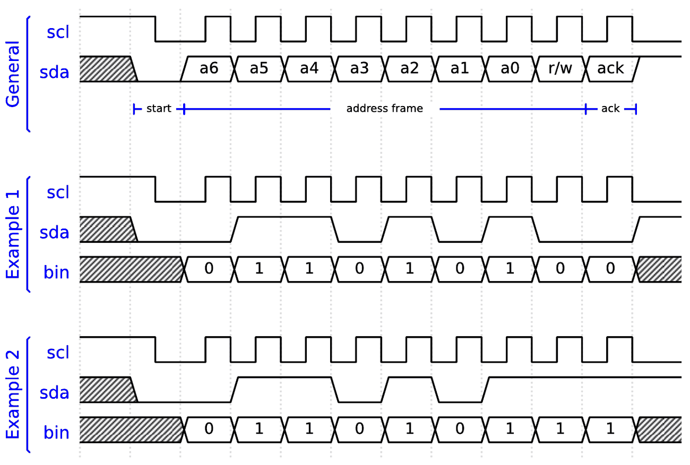
I2C protocol: data frames and stop condition
Bytes, acknowledgements, goodbye
After the name, bytes flow one at a time, and whoever receives each byte nods (ACK). When the controller is reading and has had enough, it shakes its head instead (NACK), then ends with another special throat-clear (the stop condition).
- After a successful address frame the controller keeps generating clock pulses and data transmission begins.
- SDA is controlled by either the controller or the target, according to the R/W bit.
- Each data frame is a byte (8 bits, MSB first) followed by an acknowledgement bit from the receiver: 9 clocks per byte. One or more data frames can follow.
- If the last data frame is a read, the controller sends a NACK to indicate it intends to terminate the transfer.
- Stop condition: (1) with SCL low, the controller pulls SDA low, (2) SCL goes low to high, (3) SDA goes low to high while SCL is high.
- Slide 29, example 1 (write 0xA7 to 0x35):
0110101 0 | 0 | 10100111 | 0. Example 2 (read 0x23 from 0x35):0110101 1 | 0 | 00100011 | 1. Blue bits are driven by the controller, green by the target.
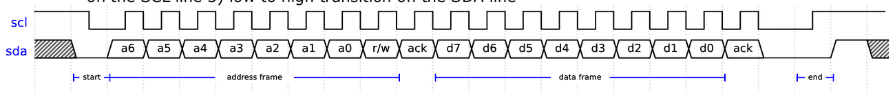
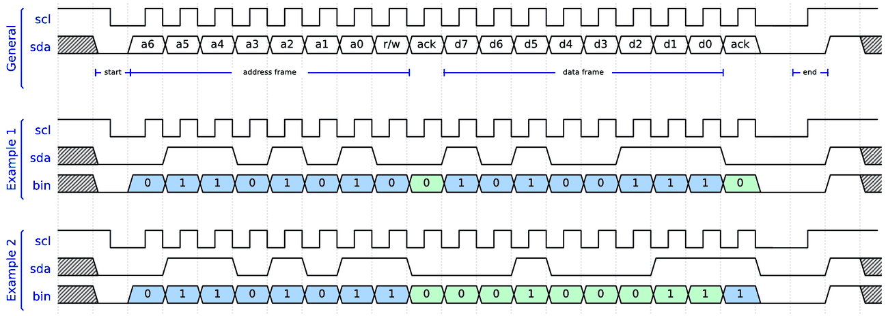
Open-drain output and clock stretching
'0' always wins
On a pull-cord bus, a single person holding the cord down beats everyone else. A slow target can use that on the clock wire: it simply holds SCL low, and the controller cannot make the next clap until it lets go. The target pauses time.
- Open-drain mode has two states: logical '0' (low voltage) and Hi-Z (disconnected). It sets the line to '0' actively and to '1' indirectly, by disconnecting and letting the pull-up raise it.
- The line is '1' only if nobody transmits '0': a wired-AND. If two devices control the line at the same time, '0' always wins, and there is never a short.
- Clock stretching: a target that needs more time to process data can pull SCL to '0'. The controller cannot generate the next high clock phase until SCL is released, so the target temporarily stops time.
- The controller notices by reading SCL back after releasing it.
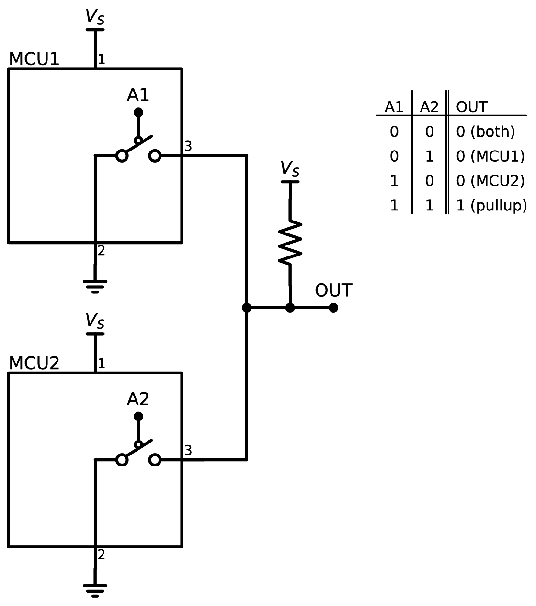
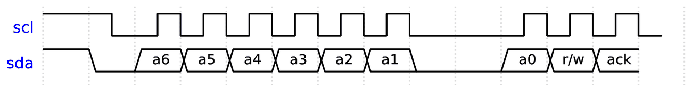
I2C: multiple controllers and arbitration
Who backs off when two start together
Two people start talking at the same instant. Each listens to the line while speaking. The first moment one hears a "0" where they said "1", they realise someone else is talking and politely stop. The other never even notices the collision.
- I2C supports multiple controllers thanks to the open-drain bus. Controllers monitor the bus for start/stop conditions and do not initiate a start while it is busy.
- However, two controllers may start a transmission at the same time. Arbitration resolves it:
- if two devices control the line at the same time, '0' always wins;
- when a device transmits '1' (by disabling its output), it reads the line in parallel;
- if the line remains '0', somebody else is active;
- the first controller that detects an inconsistency backs off and lets the other finish.
- The one that holds out longer before sending a '1' wins. Since addresses go MSB first, the controller addressing the lower address wins. Nothing is lost: the winner's frame is intact.
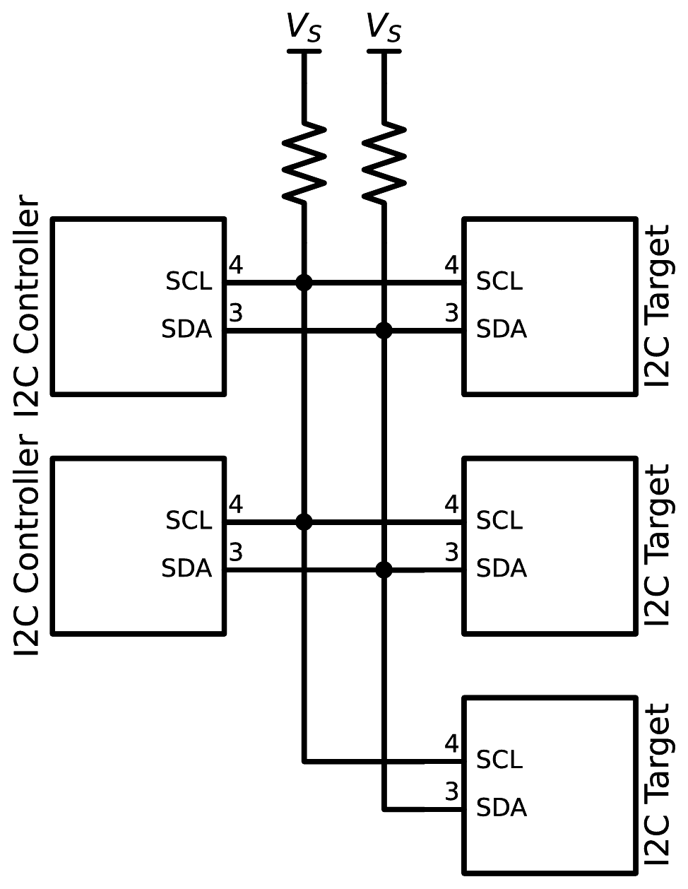
I2C: repeated start condition
Keep the floor between transactions
Saying "goodbye" and then "hello" again gives others a chance to grab the conversation. A repeated start is saying "and another thing..." without ever hanging up.
- The controller can make transactions back-to-back by generating a repeated start condition.
- First it raises both SDA and SCL high avoiding a stop condition (SDA rises while SCL is still low).
- Then it generates a new start condition by pulling SDA down before SCL.
- Other I2C controllers do not interfere, because they wait for a stop condition. This keeps two-step operations (such as the register read in topic 25) atomic.
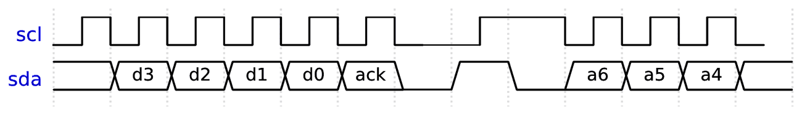
I2C: write and read a target register
3 bytes to write, 4 to read
Writing a drawer: "Hey sensor, drawer 15, put in 42." Reading a drawer takes two sentences: "Hey sensor, drawer 15" and then, without hanging up, "Hey sensor, what's in it?"
- Peripherals typically organise their internal memory in registers, each with an address and a value.
- To read or write a register, the controller first writes the register address it wishes to access.
- Write to target register (3 bytes): Start → Target Address (W) → Register Address → Register Value → Stop.
- Read register from target (4 bytes): Start → Target Address (W) → Register Address → Re-Start → Target Address (R) → Register Value → Stop.
- With an ACK/NACK after every byte, each byte costs 9 clocks: a read is at least 36 clocks, 360 µs at 100 kHz.
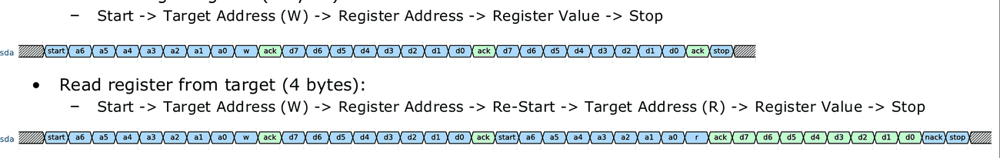
Example of an I2C peripheral: the TMP1075 temperature sensor
Register map and configurable address
A tiny thermometer chip that lives on the two-wire bus. Point at its temperature drawer, read two bytes, and you have the temperature. Four of them can share one bus, because two bits of their name can be set on the board.
- TMP1075: a temperature sensor with an I2C interface and a command/control interface over I2C.
- Configurable I2C address 10010xx: four addresses, 0x48 to 0x4B.
- Its register map: 00h TEMP (R), 01h CFGR (R/W, configuration), 02h LLIM (R/W, low limit), 03h HLIM (R/W, high limit), 0Fh DIEID (R, device ID).
- The datasheet figures show the register-pointer pattern from topic 25: write the pointer byte, then read the (16-bit) register as two data frames, the controller NACKing the last one.
- Per the datasheet, TEMP holds a 12-bit two's-complement value in its upper bits with 0.0625 °C per step, so the LLIM and HLIM reset values 4B00h and 5000h mean 75 °C and 80 °C.
- The application circuit uses 5 kΩ pull-ups on SDA and SCL.
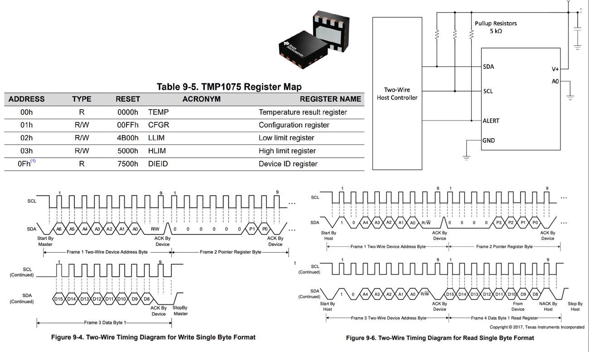
Choosing a bus
Summary: UART vs SPI vs I2C
Pins, speed, overhead, energy
UART is a private phone line. SPI is a fast conveyor belt with a separate "you're up" wire per guest. I2C is a party line where everyone is called by name: fewest wires, slowest, and it burns a little energy on every '0'.
| Property | UART | SPI | I2C |
|---|---|---|---|
| No. peripherals | Point-to-point | Many (GPIO) | Many (address) |
| Multi-controller | No | No | Yes |
| Rate (typical) | 10 to 100 kbps | 1 to 20 Mbps | 100 to 400 kbps |
| GPIOs required | 2 | 3 + 1 per peripheral | 2 |
| Simultaneous Tx/Rx | Depends on hardware | Full-duplex | Half-duplex |
| Overhead | 2 to 4 bits per byte | 0 | 11 + 1 per byte |
| Energy requirements | ++ | + | +++ |
- UART overhead: start + 1 or 2 stop bits + optional parity. I2C overhead: start, address frame with ACK and stop (11 bits per transaction), plus one ACK bit per data byte.
- Energy: I2C's pull-ups draw current on every '0'; SPI's push-pull lines only draw current while switching.
I3C
The best of both worlds
I3C keeps I2C's two wires and polite start, then, once everyone knows who is talking, switches to SPI-style strong pushing on the data line to go much faster.
- Aims to be the best of both worlds (I2C and SPI).
- A primary controller controls the clock; a secondary controller may exist.
- Switches SDA from open-drain to push-pull whenever possible: after the start condition the controller switches SDA to push-pull, allowing the clock to be increased up to 12.5 MHz.
- Pull-up resistors are provided by the I3C controller.
- Not supported: clock stretching and 10-bit addresses.
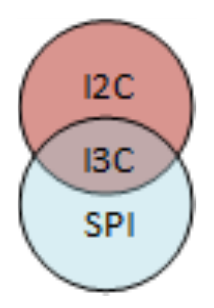
Cheat sheet
The numbers and rules worth memorising
UART frame
LSB first. 8N1 = 10 bits per byte.
Bit time and throughput
9600 8N1: 104 µs per bit, 960 bytes/s.
Clock tolerance
N = bits per frame; about 5% for 8N1, less in practice.
Parity
Detects 1 (any odd number of) flipped bits; corrects none.
Electrical levels
Never connect RS-232 directly to an MCU pin.
SPI modes
CPOL: clock idle level. CPHA = 0: read on leading edge; 1: read on trailing edge.
SPI pins
Only one CS low at a time; MISO in Hi-Z when deselected.
I2C address byte
7-bit address MSB first, R = 1, W = 0. 112 usable addresses.
I2C conditions
Data bits only change while SCL is low. ACK = 0 from the receiver; NACK = 1.
I2C register access
9 clocks per byte. Pull-up power while '0': VS²/R.
Figures cropped from the lecture slides "Week 5: Serial Communication" by Xenofon Fafoutis and Massimo Pavan, DTU Compute, with their original sources noted. For personal study.